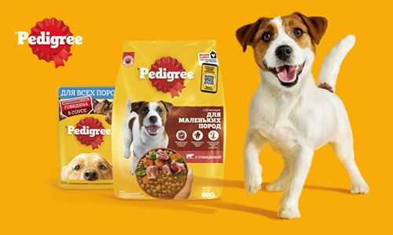

Сухой корм — самый популярный и удобный вариант питания. Гранулы долго хранятся, легко дозируются и помогают механически очищать зубы питомца от налета при разгрызании
Влажный корм в консервах или паучах отличается высокой вкусовой привлекательностью.
Он содержит много влаги, что полезно для водного баланса, и отлично подходит для привередливых собак или пожилых питомцев.
Натуральный рацион (BARF) состоит из сырого мяса, костей и овощей.
Такая диета максимально приближена к природному питанию хищников, но требует от владельца строгого контроля качества и свежести продуктов.
